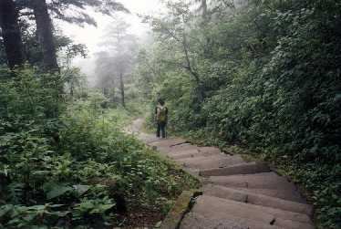

谈对我对峨眉山山路的感受
我们的车停到了雷洞坪，一片山腰上的平地。这里也几乎是绕山公路的最顶端。因为当时我们不知道金顶和接引殿其实都可以住宿，所以就在这里住进了旅店。海拔两千多米的地方已经比成都冷的多，于是便可以看到诸如有些人穿短衣而有些人穿棉袄的滑稽景象。
山上的天气千变万化，刚才可能还是晴空万里，现在云就飘到了你的中间，接下来就下起雨来。我们在雷洞坪周围转了转，便见识到了峨眉山太阳普照大地和雷公怒吼的不同景象。而在一片伸手不见五指的漆黑中（可能是天黑，也可能是因为大雾 那种也可以叫做云的东西）拥抱空气，的确觉得离上帝很近。本打算看一看峨眉山上的星空，但是因为明天大家还要上山，旅店很早就关门了，所以我们也只好回去休息了。
爬山的方式很多，特别是在峨眉山这种当地人极端热情的地方。你可以选择坐缆车。缆车的角度超过45度，的确是一件非常刺激的方式，只是我总觉得有点损失爬山的本来面目。还可以坐滑竿，就是两个人抬着你走。应该比较舒服，不过躺着也实在看不见什么东西，而且（不知道为什么）我的内心也不太支持这样的交通工具。因为在你坐在上面的时候，你总觉得你是奴隶主，而抬你的人是奴隶，于是就开始有些良心不忍，虽然你很清楚着是一种你给他钱他给你服务的平等交易。但是我一直觉得，如果真的坐缆车，我简直不是到这里来爬山。于是我们决定，明天一早起来爬山上去看日出。
 夜里睡的不好（或许是太兴奋，也或许因为山里太潮湿），所以早上爬起来便也不成问题（反正也睡不着）。很早便起来了，并且经过非常艰难的一个半小时（官方预计是两个小时），成为了除了抬滑竿以外很少几个爬到山顶的人，刚好赶上了那个其实因为有云而不太好的日出。很兴奋，一方面因为我们是“爬”到山顶的，另一方面，据说这样的云不致多的连太阳都看不到的日子在夏日的峨眉山已经很少见了。山顶的风景真的很好，我想我费如此大的力气来到峨眉山并且爬到山顶或许也仅仅为了欣赏这样几分钟这样好的风景。我领会到了“峨眉仙境”的意思。
后来我们又一路走下山，因为我们走的是万年寺一线的山路，所以并没有看到太多好的风景。我们走到了配的上“钻天坡”一类名字的山路，见到了猴子（那种会对着我呲牙的可爱动物），也去了名叫万年寺的非常有个性的寺院。这一天我们一共走了七十里的山路，甚至当我们结束了这次峨眉山之旅的时候我都不知道我们为什么一定要走（可以坐车及上文的各种有趣的交通工具），但是走路的确是一种非常有趣的行为方式，让我现在还非常留恋那时走路的经历，虽然我不知道为什么。或许，或许我们不过是在追求一种和大自然的亲近和一种用原始交通工具的愉悦。
仙境终究还是仙境，那种美丽的景色是无法言表的。而就是为了追求这种仙境，我们在坐车和走路中用去了整整两天。而当我结束了这次旅行的时候，我问自己，我得到的仅仅是在山顶那短短的几分钟的享受吗？答案是否定的。或许，我们明知“旅游”一词现在就是 “受罪”的同义词却乐此不疲，这就是真正的原因吧！
如果有机会，我还会从游峨眉山，享受那种“峨眉仙境”，并且，我一定要从通过九十九道弯的另外那条山路走下去。